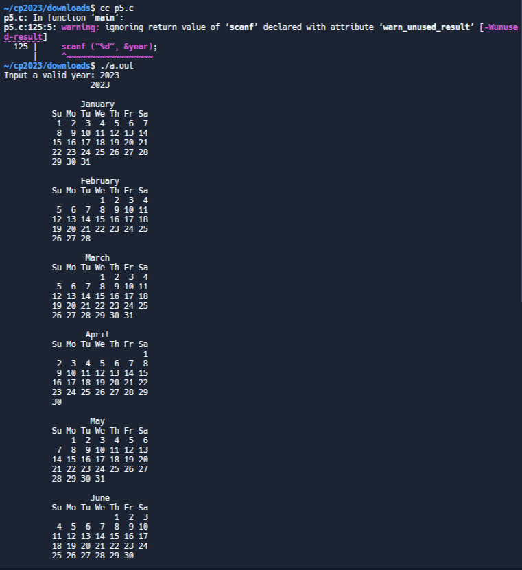
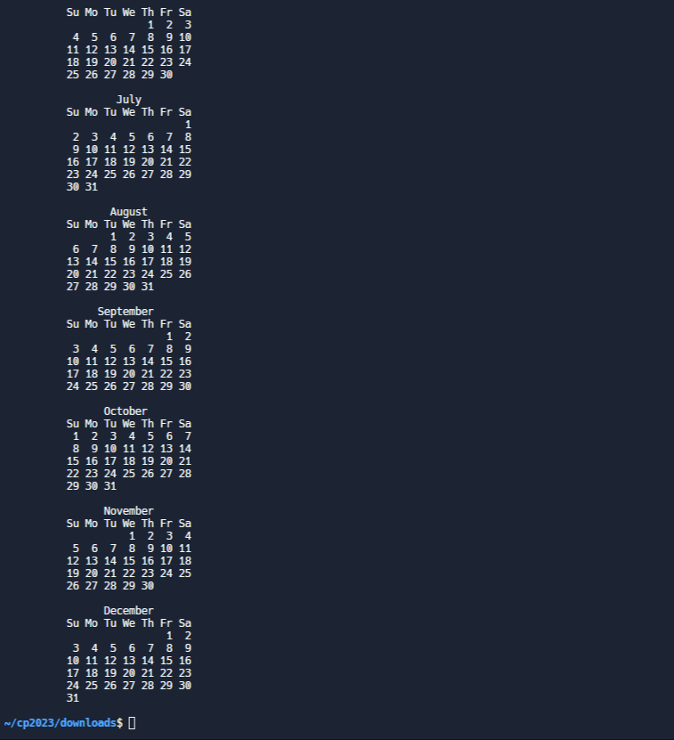

4.刪除一句字串裡的空格 <<
Previous Next >> 6.建立一個99乘法表
5.輸入年份產生日期
#include <stdio.h>
#include <stdlib.h>
#include <string.h>
int width = 40, year;
int cols, lead, gap;
const char *wdays[] = { "Su", "Mo", "Tu", "We", "Th", "Fr", "Sa" };
struct months {
const char *name;
int days, start_wday, at;
} months[12] = {
{ "January", 31, 0, 0 },
{ "February", 28, 0, 0 },
{ "March", 31, 0, 0 },
{ "April", 30, 0, 0 },
{ "May", 31, 0, 0 },
{ "June", 30, 0, 0 },
{ "July", 31, 0, 0 },
{ "August", 31, 0, 0 },
{ "September", 30, 0, 0 },
{ "October", 31, 0, 0 },
{ "November", 30, 0, 0 },
{ "December", 31, 0, 0 }
};
void space(int n) { while (n-- > 0) putchar(' '); }
void init_months()
{
int i;
if ((!(year % 4) && (year % 100)) || !(year % 400))
months[1].days = 29;
year--;
months[0].start_wday = (year * 365 + year/4 - year/100 + year/400 + 1) % 7;
for (i = 1; i < 12; i++)
months[i].start_wday = (months[i-1].start_wday + months[i-1].days) % 7;
cols = (width + 2) / 22;
while (12 % cols) cols--;
gap = cols - 1 ? (width - 20 * cols) / (cols - 1) : 0;
if (gap > 4) gap = 4;
lead = (width - (20 + gap) * cols + gap + 1) / 2;
year++;
}
void print_row(int row)
{
int c, i, from = row * cols, to = from + cols;
space(lead);
for (c = from; c < to; c++) {
i = strlen(months[c].name);
space((20 - i)/2);
printf("%s", months[c].name);
space(20 - i - (20 - i)/2 + ((c == to - 1) ? 0 : gap));
}
putchar('\n');
space(lead);
for (c = from; c < to; c++) {
for (i = 0; i < 7; i++)
printf("%s%s", wdays[i], i == 6 ? "" : " ");
if (c < to - 1) space(gap);
else putchar('\n');
}
while (1) {
for (c = from; c < to; c++)
if (months[c].at < months[c].days) break;
if (c == to) break;
space(lead);
for (c = from; c < to; c++) {
for (i = 0; i < months[c].start_wday; i++) space(3);
while(i++ < 7 && months[c].at < months[c].days) {
printf("%2d", ++months[c].at);
if (i < 7 || c < to - 1) putchar(' ');
}
while (i++ <= 7 && c < to - 1) space(3);
if (c < to - 1) space(gap - 1);
months[c].start_wday = 0;
}
putchar('\n');
}
putchar('\n');
}
void print_year()
{
int row;
char buf[32];
sprintf(buf, "%d", year);
space((width - strlen(buf)) / 2);
printf("%s\n\n", buf);
for (row = 0; row * cols < 12; row++)
print_row(row);
}
int main(int c, char **v)
{
int i, year_set = 0;
printf("Input a valid year: ");
{
scanf ("%d", &year);
for (i = 1; i < c; i++) {
if (!strcmp(v[i], "-w")) {
if (++i == c || (width = atoi(v[i])) < 20)
goto bail;
} else if (!year_set) {
if (!sscanf(v[i], "%d", &year) || year <= 0)
year = 1969;
year_set = 1;
} else
goto bail;
}
init_months();
print_year();
return 0;
bail:
fprintf(stderr, "bad args\nUsage: %s year [-w width (>= 20)]\n", v[0]);
exit(1);
}
}


4.刪除一句字串裡的空格 <<
Previous Next >> 6.建立一個99乘法表